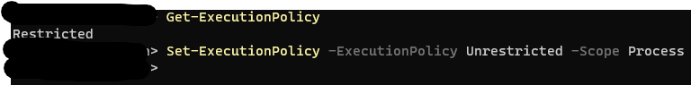
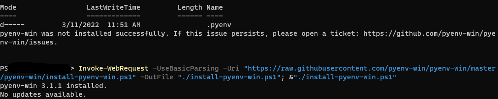
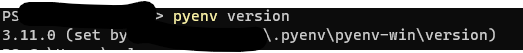
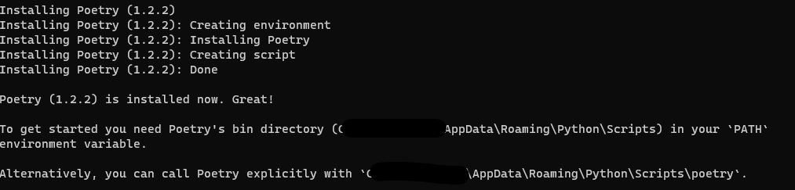
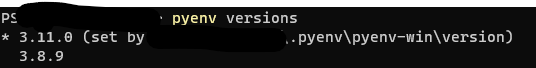

Python setup
The issue
I’m working on a Python project, and trying to figure out how to set up and get started. I’m used to R, where most simply, all I have to do is download R, Rstudio, and then start coding. R doesn’t need any environment manager to get going, but I do tend to use renv to manage packages, but that’s pretty lightweight and straightforward. And I can start coding without it.
Python, on the other hand, is more opaque. In part it’s because I’m new to it, but a bit of googling suggests I’m not the only one. It’s likely also because there’s no one dedicated IDE/workflow that almost everyone uses, a la Rstudio (maybe that will change with the Rstudio–> Posit move?).
So, I’m going to work out getting setup to code in Python (I sorta did it before, but I’m trying a new way with fewer black boxes). And using this as a place to write notes/what I did as I go. That means this might end up being less a tutorial and more a series of pitfalls, but we’ll see how it goes.
The intention
I’m trying to get set up to manage Python versions themselves with pyenv and packages with poetry. As far as I can tell, poetry does approximately similar things to renv (but more complicated because python). And I haven’t used something similar to pyenv to manage R versions themselves, but I am about to have to figure that out too because a lot of packages broke when I moved to R 4.2. Will probably try rig, and write another one of these. I’m assuming I’ll code primarily in VS Code, unless Posit suddenly runs python like R (without reticulate). Even then, remote work will all use VS Code for the time being. I’m loosely following https://briansunter.com/blog/python-setup-pyenv-poetry and https://www.adaltas.com/en/2021/06/09/pyrepo-project-initialization/, and doing all the actual setup in VS Code, not Rstudio.
Realising after I wrote this that I probably could have actually done all of this inside quarto- I think I can run powershell/system code in code blocks?
Getting started- systemwide installations
Both those websites are working on Unix and Mac, so while step 1 is install pyenv, we aren’t going to apt-get or brew install. In fact, the pyenvgithub says we need to use a windows fork. Things already getting nonstandard. Should I just run everything in Windows Subsystem for Linux? Maybe, but I’d like to just use windows if possible, as much as I like WSL.
pyenv
Guess I’ll just start at Quick start. Going to use powershell directly rather than inside vs code here, because vs code likes to open in recent directories instead of globally, and I think I want pyenv system-wide.
Step 1- install in powershell with Invoke-WebRequest -UseBasicParsing -Uri "https://raw.githubusercontent.com/pyenv-win/pyenv-win/master/pyenv-win/install-pyenv-win.ps1" -OutFile "./install-pyenv-win.ps1"; &"./install-pyenv-win.ps1"
Can’t run scripts (new computer). Sends me to https:/go.microsoft.com/fwlink/?LinkID=135170.

Setting the policy to just the running process. Will probably regret that when I next try to run a script, but for now I don’t really want universal unrestricted powershell scripts.
Powershell script permissions
Aside- it starts to get really annoying because pyenv runs scripts, so will need to fix. Get an error when I try to change Scope to CurrentUser because of a group policy. Setting it to Set-ExecutionPolicy -ExecutionPolicy Unrestricted -Scope LocalMachine seems to work, despite apparently being a larger set than my User.
It says it wasn’t installed successfully, but when I try again it says it’s there. I guess push on?

Step 2 was just to shut down and reopen powershell
Step 3- Run pyenv --version. If you haven’t changed policy to something larger than Process, this will fail because of the ExecutionPolicy. Guess I need to turn it back on. I kept doing one-offs for a while until I got annoyed and then set it to LocalMachine (see above).
Step 4, pyenv install -l lists a million python versions. Seems like a good thing. I’m going to need older versions in projects, but for now, let’s install the latest.
Step 5- the install of python. There’s a 3.12.a1, which I’m assuming means alpha, so I’ll go with pyenv install 3.11.0, which is the most recent without the .a1.
The install seems to have worked.
Step 6- set global pyenv global 3.11.0
Step 7- check it worked pyenv version 
Step 8- check python with python -c "import sys; print(sys.executable)"
works, gives me the path, \.pyenv\pyenv-win\versions\3.11.0\python.exe
Now it says to validate by closing and reopening- do that. Now pyenv --version gives the version, while pyenv alone tells us the commands. They’re also all at the github page I’m following.
Then try in a vs code terminal, also works. Note that using the git bash terminal instead of powershell bypasses the script permissions issue if it hasn’t been set larger than Process.
Now, we have Python 3.11 as the global python version, but should be able to install other versions and use them in local projects. Assuming I’ll get there once I set up poetry.
poetry
Once again, the websites I’m following have commands for mac/unix, so back to the main poetry page to sort this out on windows.
Again, powershell command on windows. Could I use the git bash in vs? Maybe? Just stick with powershell. (Invoke-WebRequest -Uri https://install.python-poetry.org -UseBasicParsing).Content | python -.
The instructions say that last bit should be py instead of python if python not installed from Microsoft Store, but had to use python anyway.
seems to have worked- 
The instructions then have an advanced section I’m skipping, but that install message above seems to match step 3, where we add Poetry to the PATH in order to run Poetry by just running poetry and not the full path.
I could change it with powershell, but the instructions I found involved a bunch of regex. Instead, search for “Advanced System Settings”, then in the bottom right, click Environment Variables, then in the System Variables box, click on Path, then Edit button, then New. That creates a blank line, paste in the path from poetry install, or use the one from their website, %APPDATA%\Python\Scripts. OK out of all the system settings boxes.
Shut down powershell, then fire it back up and run poetry --version. If the path setting failed, it won’t be able to find poetry, if it worked, it’ll give the version number.
That worked for me once, but now isn’t working the next day. Actually, it works in powershell, but not vs code powershell. It wasn’t unpacking the %APPDATA% correctly - running (Get-ChildItem env:path).Value lists %APPDATA% instead of the expanded directory. I stuffed the full path as in the screenshot above in the PATH, restarted VS Code and it works. Interestingly though, I left the %APPDATA% version there too, and it’s now unpacked when I run (Get-ChildItem env:path).Value.
Setting up a project
Let’s first say we’re going to use a different-than-standard version of python, so install that with pyenv. For this test, let’s just use 3.8.9. Not really any particular reason. So, run pyenv install 3.8.9
Now, pyenv versions (NO FLAGS- the “--” flag will give the version of pyenv) shwos two versions with an asterisk by global.

Create the project
Just need a directory and cd inside it, I think. I’ll make it inside the directory with this qmd. mkdir pytesting, cd pytesting. Actually, this yields too much nesting. poetry builds a directory for the project, and another directory in that, so this just yields annoying levels of nesting. Call poetry new (see below) from the directory you want to contain the main project directory.
Set the python version
I think just pyenv local 3.8.9. That creates a .python-version file in the directory, which seems to be the idea.
Set poetry
Am I going to completely screw up my R project having this inside it? Guess we’ll find out.
poetry new pytesting then creates another directory and returns “Created package pytesting in pytesting”. It builds the outer directory, so don’t make one first or the nesting gets silly.
That directory seems to be establishing a standard package structure and the lockfiles etc. Opening the .toml looks like it didn’t pick up the python version though- it’s using 3.11. Hmmm. Tried killing and restarting powershell and it’s still doing that. Not sure why it’s not picking up the local python.
If I move up a directory, the pyenv versions returns back to 3.11. So pyenv seems to be working, but poetry’s not picking it up. I guess I can change in manually, but that’s annoying.
Seems to be a long-running known issue- recent posts here https://github.com/python-poetry/poetry/issues/651. Ignore for now, maybe fix manually if it becomes an issue. I tried the solution in the last post (poetry config virtualenvs.prefer-active-python true), and it didn’t fix it. Tried completely starting over a few times. No luck. Worry about that later. I guess that means the pyenv stuff might be useless for the moment- will need to use the version poetry thinks it has in the directory. It does look like can reinstall poetry, but that seems like a pain. (No one else seems to have issues with the config above).
So, I’ve just set the pyenv to the global for now, and moving ahead with poetry for the project. I guess I could change pyenv global each time I switch projects as an annoying workaround if it becomes an issue. An answer might be poetry env use , see https://python-poetry.org/docs/managing-environments/.
Using poetry for dependencies
Much like renv can install all dependencies from info in renv.lock, we could build the project with dependencies from pyproject.toml. Or, also like renv, as we’re developing a project, we can add iteratively. Let’s do that, since that’s what we’re doing.
There seems to be an intermediate step here though, running poetry install to initialise a virtual environment from the .toml. I assume this would install whatever’s in the toml, but we don’t have anything at present. That apparently creates a virtual environment somewhere globally (.cache/, according to https://www.adaltas.com/en/2021/06/09/pyrepo-project-initialization/).
And now I have poetry.lock . According to the docs, this takes precedence over the .toml, though I doubt that’s true for python version itself. This is what gets committed to share the project.
Typing poetry shell at the command line activates the environment. But how do we activate it for a VS code session?
Seems to just be active once we open a .py file in that directory (e.g. if we open the file, then a powershell at that location, it appears with pyenv shell already going.
To test adding a dependency, i’ll try numpy. First, I can run simply python code- a = 1 etc. But import numpy as np fails (as expected)- ModuleNotFoundError: No module named ‘numpy’. So, click back to the powershell terminal, and try poetry add numpy. It resolves dependencies and writes a lock file.
And yet, if I try import numpy as np, same error. The poetry show command lists it as installed.
So, it’s because VScode doesn’t know where to find the venvs. On a one-off basis, can use poetry env info --path to get the path, then in VS code select interpreter (ctrl-shift-p for the search thingy), then paste in that path. But that’s annoying.
I’m trying getting to the search thing, then User settings, then adding C:\Users\galen\AppData\Local\pypoetry\Cache\virtualenvs\ to the venv Folders. That seems to work, but it may just be remembering from last time.
The most robust option might be to not keep the venvs in .cache but instead local to the project, as described here. Looks like that’s done with poetry config virtualenvs.in-project true at the very outset, and then rebuilding the project (and it should persist for future projects).
And that’s what we’re doing in the project I’m doing this for. So let’s do that. First, run poetry env list to get the name, then poetry env remove NAME to delete. But it failed, seemingly partway. So also go to AppData\Local\pypoetry\Cache\virtualenvs and delete the folder. Restart vs and now poetry env list doesn’t return anything.
To set the config, poetry config virtualenvs.in-project true . I believe that’s global (I ran it outside the project).
Now rebuild from .toml in the project with poetry install. The .venv is there now, but VS still can’t find it.
OK, shut everything down, and instead of opening VS again as usual, I opened it and then opened a new window, and now it works. It was somehow setting the root based on where VS happened to open, rather than based on where files were. That probably makes sense for a git repo with just python, but broke here. I assume we need to add the venv directory to the gitignore.
Just did poetry add pandas and it works and I immediately have access to it in a python script.
Complications with add
To add a specific version of a package, use
poetry add packagename==2.0.5There are a number of other ways to specify version ranges, installing from git, etc.
VS code note
Sometimes VS seems to find the poetry venv and use it, and other times (I think if it’s not at the head dir of the workspace?) it needs to be pointed at the python.exe. To do that, open the command palette, (ctrl-shift-p), select python interpreter, then .venv\scripts\python.exe wherever that venv is.